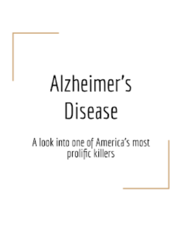
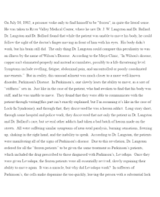
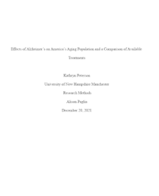
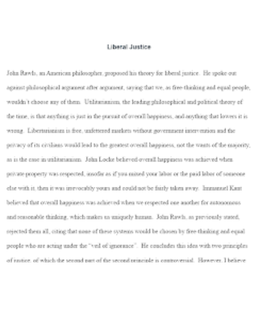
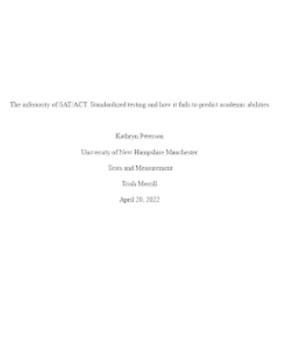
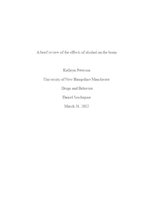
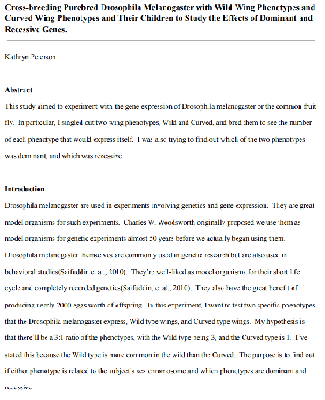

During my years in college, I've written many theses and argumentative essays. I've also written a few lab reports. Below are some of the highlights of my many papers.
|

Alzheimer's Disease |

The Frozen Addicts |
|---|---|
|

Effects of Alzheimer’s |

Liberal Justice: John Rawls |
|
National Security Threats |

The Inferiority of SAT/ACT |
|

Effects of Alcohol |

The Preferences of Artemia... |
|
Cross-breeding Drosophila Melanogaster... |
During my years in college,
I've written many theses and
argumentative essays. I've
also written a few lab reports.
Below are some of the highlights
of my many papers.